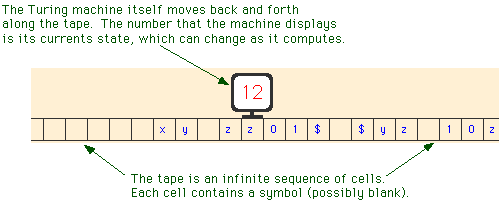
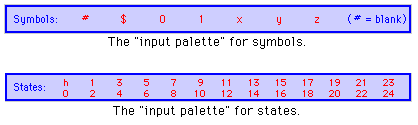
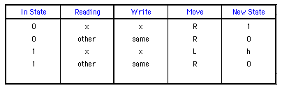
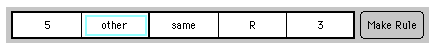
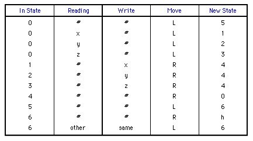

Labs for The Most Complex Machine
xTuringMachine Lab: Introduction to Turing Machines
TURING MACHINES are extremely simple calculating devices. A Turning machine remembers only one number, called its state. It moves back and forth along an infinite tape, scanning and writing symbols and changing its state. Its action at a given step in the calculation is based on only two factors: its current state number and the symbol that it is currently scanning on the tape. It continues in this way until it enters a special state called the halt state. In spite of their simplicity, Turing machines can perform any calculation that can be performed by any computer. In fact, certain individual Turing machines, called universal Turing machines, can actually execute arbitrary programs, just as a computer can. You won't see any universal Turing machines in this lab, but you will experiment with Turing machines that can perform non-trivial calculations.
Turing machines are covered in Chapter 4 of The Most Complex Machine. Although the lab is mostly self-contained, it would be useful for you to have some familiarity with Turing machines before beginning the lab. Especially important is the idea that a Turing machine is described by a table of rules that specify what action the machine will take for each combination of state and scanned symbol. The action takes the form of writing a new (or the same) symbol to the current square, moving either left or right on the tape, and entering a new (or the same) state.
This lab includes the following sections:
In this lab, you will work with an applet called xTuringMachine. Start by clicking this button to launch the applet in its own window:
(For a full list of labs and applets, see the index page.)
Using the Applet
The xTuringMachine applet can simulate Turing machines with up to twenty-five states. The states are numbered from 0 to 24. There is also the special halt state, which is denoted by "h". The Turing machines in this applet are restricted to using the following symbols: the letters x, y, and z; the binary digits 0 and 1; the dollar sign, $; and the blank space (often written as #). We often think of the machines as working with "binary numbers" made up of 0's and 1's or with "words" made up of x's, y's, and z's. But remember that the meaning of a symbol has no effect on any calculation performed by a Turing machine; all the machine does is follow its rules.
At the very top of the xTuringMachine applet is a pop-up menu that you can use to select from among the machines that the applet knows about. The applet is set up to load several sample machines when it starts up. (Later, you'll see how to construct new machines from scratch.) You'll work with the first of these sample machines, "Change01toXY," to help you learn how to use the applet.
Just below the pop-up menu is the Turing machine itself and its tape:

Below the machine, on the left, is a set of controls. Use the "Run" and "Step"buttons to control the computation of the machine. If you click on the "Step" button, the Turing machine will perform one step in its computation. If you click on "Run," the machine will compute until you stop it or until it enters the halt state. You can control the speed of a running machine with the Speed pop-up menu, which is just above the run button. (You might want to stick with the "Step" button at first, so that you can follow each step of the computation in detail.)
To do one step in its computation, the Turing machine considers the state that it is in and the symbol that it is reading in the cell where it is located. Based on this information, it will (1) write a new symbol in the current cell; (2) move one cell to the left or to the right; and (3) change to a new state. (Note, however, that the "new symbol" that the machine writes can actually be the same as the old symbol, and that the "new state" can be the same as the old state.) The machine bases its action on the table of rules that is shown in the lower right part of the applet.
For example, look at the table of rules for the sample machine, "Change01toXY." The first row of the table says "If the machine is in state 0 and if the symbol in the current square is # (that is, a blank), then the machine will write a # in the square, move one square to the right, and change to state 0." All the rules for a Turing machine are of this general form. Note that in this case, the symbol it writes in the square is the same as the symbol that was already there; this is just a fancy way of saying that it doesn't change the contents of the square. Similarly when the machine "changes to state 0" in this case, it doesn't really change its state; its new state is actually same state that it was already in.
Step through the computation of the "Change01toXY" machine until it enters its halt state. The machine moves along the tape changing any 0 it finds to an x and changing any 1 to a y. What makes it halt? What would happen if there were no $ on the tape? And, by the way, what happens when the machine encounters the edge of the applet window? You should also try running the machine with the "Run" button.
Note that when a Turing machine halts, it displays an "h" as its current state, and the "Step" button changes to "Reset." Clicking "Reset" will reset the state to zero, so the machine will be ready to start a new computation. By convention, a Turing machine always begins its computation in state zero.
Before you go on to the rest of the lab, there are a few more things you should know about. First, you can use the mouse to drag the Turing machine to a new position on its tape. You can also drag the tape. If you want to drag the tape and the machine together, use the right mouse button instead of the left button, or hold down the Control key as you begin to drag.
Second, and more important, you should know how to change the state of the machine and the contents of its tape. You can click on the Turing machine to hilite it. You'll see a bright blue-green outline, and the blue rectangle below the machine will display a "palette" showing the possible states of the machine. To change the state of the machine, you can either type the state or use the mouse to click on the state in the palette. Editing the tape is similar. Click on any cell to hilite it. The palette displays the symbols that the cell can contain. You can type a symbol or click on it in the palette. When you do this, the hilite will move to the next cell on the tape. This makes it easy to type a string of symbols onto the tape.

Try making a new input tape for the "Change01toXY" machine. Move the machine to the beginning of the input. Make sure that the machine is in state 0. Then run the machine on your new input.
A More Interesting Machine
As another example, select the sample machine "FindDoubleX" from the pop-up menu at the top of the applet. The purpose of this machine is to move to the right along its tape, until it finds two x's in a row; it then halts on the leftmost of those two x's. The machine you looked at in the previous section had only a single numbered state, state 0. The "FindDoubleX" machine has two states, number 0 and number 1. As this machine runs, you will see it changing between these two states. Try it! Use the "Step" button to step through the computation.
Although its states are completely meaningless to the machine, from our human point of view we can assign a kind of meaning to each state. In state 0, this machine is "moving to the right searching for an x." In state 1, it "has found one x and needs to check the next square to see whether there is another x there." In state 1, after checking the next square, it halts if it finds an x there and returns to state 0 if not.
One might say that the state number counts the number of x's in a row that the machine has encountered. In state 0 it has encountered zero x's in a row; in state 1, it has encountered one x in a row. You will need to understand this in order to do one of the exercises at the end of the lab. You will also need to know about editing the rule table. This is covered in the next section of the lab.
The complete table of rules for the "FindDoubleX" machine looks like this:

The entries other under "Reading" and same under "Write" need some explanation. The word "other" is used here to indicate a default rule. This rule is used when the machine is in the state specified in the "In State" column, and no other rule applies. For example, suppose that the "FindDoubleX" machine is in state 0. If it happens to be reading an x, it will follow the first rule in the table, which tells it to write an x, move right, and change to state 1. However, if it is in state 0 and reads any other symbol, then it will apply the second rule in the table. The word "same" under the "Write" column in that rule tells the machine to write the same character that it read. Without this default rule, the machine would need six separate rules to tell it what to do when it is in state 0 and it reads one of the symbols y, z, 0, 1, $, or blank.
For an example of a more complex word-processing Turing machine, you can try out the sample machine called "CopyXYZ." This machine will make a copy of a string of x's, y's, and z's. Try it out!
Making New Machines
In this part of the lab, you will learn how to construct new machines in the xTuringMachine applet. To begin a new machine, select "[New]" from the pop-up menu at the top of the applet. This will give you an empty rule table that you can fill in to define the machine you want.
The xTuringMachine applet does not allow you to simply type in a rule. Instead, it has procedures for adding a new rule to the table and for modifying rules that are already in the table. The type of editing that you can do is similar to what you already know about setting the Turing machine's state and changing the contents of its tape.
New rules are added to the rule table using the "Rule Maker" that is located just above the table of rules. The Rule Maker has a set of five boxes where you create the rule and a "Make Rule" button that you can click to add the rule to the table:

You can edit any of the five items in the Rule Maker. Just click on the item that you want to change. The item will be hilited. In the above picture, the second item, "other," is hilited. The blue rectangular palette will display the values that you can legally put in the hilited spot. You can either type the value you want or click on it in the palette. (Note that "other" is represented in the palette by a "*". If you want to enter the value "other," you have to type * or click on it.) Once you've set up the rule you want in the Rule Maker, you can either click the "Make Rule" button or press the Return key to add it to the table of rules. The rule has no effect on the Turing machine until you add it to the table.
A newly added rule will be displayed in the table in red. The rule shown in red is selected. You can delete the selected rule from the table by clicking on the "Delete Rule" button. You can select any rule in the table by clicking on the rule.
Once a rule has been added to the table, you can edit the last three columns in the rule. Click on the item you want to change, and edit it in the usual way. Note that the last three columns of the table specify the action that the Turing machine will take when it is in the specified state and reading the specified symbol. You are only allowed to change the action part of the rule, once it is in the table. Often, the easiest way to create a table of rules is to quickly create a bunch of rules without worrying about the action specified in each rule. You can then edit the action parts of all the rules in the table.
There are lots of things in the xTuringMachine applet that you can edit. You can use the arrow keys and the tab key to move among the various editable items. Often, this is quicker than using the mouse.
You will notice that sometimes the "Make Rule" button changes into a "Replace" button. This will happen whenever the first two items in the Rule Maker match the first two items in an existing rule. If you click on the "Replace" button, the rule in the Rule Maker will replace the rule in the table.
Before you do the exercises at the end of the lab, you should get some practice at creating and editing a table of rules. Here is a table of rules for a Turing machine that "Nudges" a string of x's, y's and z's one square to the left. The machine must be started on the leftmost symbol in the string, and it will only work if there are a couple of blank squares surrounding the string:

You should make a copy of this machine by adding each of the above rules to the applet's rule table. Begin by selecting "[New]" from the pop-up menu at the top of the applet, if you haven't done so already. You should also type an input string of x's, y's, and z's onto the Turing machine's tape, and move the machine to the leftmost symbol in the input. Then you can start making the rules, one-by-one, and adding them to the table. When you are all done, you should have a machine that will perform as advertized.
One more feature of the applet deserves to be mentioned here: Suppose that you click the "Step" or "Run" button, and the Turing machine finds itself in a situation that is not covered by any rule in the rule table. In this case, the machine will stop and will display the message "No Rule Defined!" It will also set up the Rule Maker with the its current state and the symbol that it is reading, so that it is all set for defining the missing rule. It's possible to define a machine using this feature. Start with an empty table of rules. Click "Step." The machine will protest. You can define the rule, and click "Step" again. You can proceed in this way until the whole rule table has been defined. However, you have to be careful to make sure that you have in fact covered all the situations that might arise.
Binary Arithmetic
The operations of incrementing (adding one to) or decrementing (subtracting one from) a binary number are simple enough to be done easily by Turing machines.
The algorithm for adding one can be described as follows: If the digit on the tape is a zero, then simply change that digit to a one. If the digit is a one, change it to a zero, move left, and apply the same procedure at that position. (This is like "carrying" a one to the next column.) Finally, to add one to a blank space, simply change that blank to a one. (This can occur when a one is carried beyond the leftmost digit of the number; the blank should be treated just like a zero.) For example, 110_2 + 1_2 = 111_2, 1011_2 + 1_2 = 1100_2, and 11_2 + 1_2 = 100_2.
The sample Turing machine "Increment" is a simple Turing machine for incrementing a binary number (This same machine can be found in Figure 4.2 of The Most Complex Machine.) The "Increment" machine should be started on the rightmost digit of a binary number. It will add one to the number, and then it will halt on the rightmost digit of the answer. Try it out! Every time you click the "Run" button, the machine will add one to the number on its tape.
With somewhat more work, it is possible to make a Turing machine that adds two binary numbers. The sample machine "AddBinaryNumbers" does this in the ordinary way, by adding corresponding digits in the numbers one-by-one, starting at the right and working left. The numbers to be added must be next to each other on the tape, and they must be separated by a single blank space. The machine must be started on the right end of the second number. Try running this machine on the sample input, and then try giving it several other pairs of numbers to add. Note that as the machine adds the second number to the first, it replaces 0's and 1's with x's and y's. When it finishes, it erases the second number from the tape and changes all the x's and y's back to 0's and 1's.
The final sample machine, "MultiplyByAdding," multiplies two binary numbers. It does not do this by the usual multiplication algorithm. Two numbers can be multiplied by repeatedly adding the first number to itself. The second number tells how many times the addition is to be performed. The "MultiplyByAdding" machine works in this way. Each time it adds the first number to itself, it subtracts one from the second number. When the second number reaches zero, the process is finished. At that point, the machine erases the two original input numbers. The number remaining on the tape at the end of this process is the product of the two inputs. You won't have to understand this machine in detail, but it's interesting to see how a relatively complex computation can be performed by a Turing machine.
Exercises
Exercise 1: Create a Turing machine that will move to the right until it finds a $. Then it will erase everything on the tape between that $ and the next $ to the right. It will halt when it gets to the second $. The $'s themselves should not be erased. You can do this with a fairly simple machine that uses only two states, 0 and 1. (Note that if the machine is started on a tape that does not contain two $'s to the right of the machine's starting position, then the machine will never halt.)
Exercise 2: One of the examples in the lab is a Turing machine called "FindDoubleX." This machine moves to the right until it comes to two x's in a row. Then it halts on the first of the two x's. Create a new machine that will move to the right until it finds three x's in a row. It should halt when it finds a group of three consecutive x's. (Ideally, it should move back to the first of the three x's and halt there.)
Exercise 3: This exercise assumes that you have done Exercise 2. Given any sequence of x's, y's, and z's, describe how you could construct a machine that will move to the right until it finds the given sequence. For example, if the sequence is xyzzyx, it should move to the right until it has found the symbols x, y, z, z, y, and x in consecutive squares, and then it should halt. What is the minimum number of states that such a machine would need (assuming that you don't care which square it halts on)? Why?
Exercise 4: Construct a Turing machine to do the following: Assume that the machine is started on a tape that contains nothing but a string of $'s. The machine is started on the left end of this string. The purpose of the machine is to multiply the length of the string by 3. For example, if it is started on a string of seven $'s, it should halt with twenty-one $'s on the tape. If it is started on a string that contains just one $, it should halt with three $'s on the tape. Here is one way that the machine might operate: Change one of the $'s to an x, then go to the end of the string and write two more x's. Go back and process the next $ in the same way. Continue until all the $'s have been processed. Then change all the x's to $'s.
Exercise 5: Construct a Turing machine to do the following: Assume that the machine is started on a tape that contains nothing but a string of $'s. The machine is started on the left end of this string. The purpose of the machine is to divide the length of the string by 3. (Throw away any extra fractional part, so that 17 divided by 3 would be 5). For example, if the machine is started on a string of twenty-one $'s, it should halt with seven $'s on the tape. If it is started with ten $'s on the tape, it should halt with three $'s on the tape. And if it is started with five $'s on the tape, then it should halt with one $ on the tape.
Exercise 6: Modify the sample machine "Increment" so that instead of halting after it adds one to its input, it enters into state 0. (All you have to do is change the "New State" in one rule from h to 0.) With this modification, you have a counting machine. It will continue to add one to the number on the tape over and over, as long as you let it. Run the counting machine at "Fastest" speed, and time how long it takes to count from 0 up to 1000000000 (in binary). The number 1000000000 has nine zeros and so is equivalent to 29, or 512, in base 10. Based on your answer, compute approximately how long the machine would take to count from 0 to 1000000000000000, that is from 0 to 215. Explain how you computed your answer and why the method that you used is valid.
Exercise 7: Construct a Turing machine to do the following: Assume that the tape contains a binary number, and that the machine is started on the right-hand end of the number. The machine should write a string of $'s, where the number of $'s is given by the binary number that was initially on the tape. For example, if the number on the tape was 10110, which is 22 in binary, then the machine should halt with a string of twenty-two $'s on the tape. In order to construct this machine, you will have to understand something of how the sample machine "MultiplyByAdding" works. In that machine, the problem was to repeat the addition operation a specified number if times. In this exercise, the problem is to repeat the operation "add a $ to the string" a specified number of times.
Exercise 8: Construct a Turing machine to do the following: Assume that the machine is started on a tape that contains nothing but a sequence of x's and y's. (The machine must work for any such sequence.) The machine is started on the left end of this sequence. The purpose of the machine is to separate the x's from the y's. For example, given the input xxyxyyxyxx, it will change the tape to read xxxxxxyyyy. The output string does not have to be in the same place on the tape as the input string, but it should be the only thing on the tape when the machine halts. There are many ways to make such a machine.
Exercise 9: Write a description of the algorithm that is used by the sample machine "AddBinaryNumbers" to add two binary numbers on its tape. Your object is to express an understanding of the process used. A description that is on too high a level -- such as "It adds the numbers digit-by-digit from the right" -- doesn't really explain the process. A very low-level description doesn't provide any understanding of the goals or purpose of the actions taken.
Exercise 10: The Turing machines you worked with in this lab can use only the symbols $, 0, 1, x, y, z, and blank. But this is an arbitrary limitation imposed by the xTuringMachine applet. In fact, a Turing machine could be built to use any finite number of different symbols. But no matter how many symbols a Turing Machine might use, the same computation could be done by a machine that uses only the symbols 0, 1, and blank. Why is this true? (Think about the way data is represented in a real computer.) If this is the case, then, why bother with Turing Machines that use more than the minimum number of symbols?
Exercise 11: I have claimed that Turing machines can do any computation that can be done by any computer. What is your reaction to this claim? Do you believe it? What evidence is there to support this claim? What reasons might someone have for doubting it? Write a short essay discussing your answers to these questions.
Exercise 12: Write a short essay comparing Turing machines as computational devices with the model computer, xComputer, that you worked with in previous labs.
This is one of a series of labs written to be used with The Most Complex Machine: A Survey of Computers and Computing, an introductory computer science textbook by David Eck. For the most part, the labs are also useful on their own, and they can be freely used and distributed for private, non-commercial purposes. However, they should not be used as a formal part of a course unless The Most Complex Machine is also adopted for use in that course.--David Eck (eck@hws.edu), Summer 1997